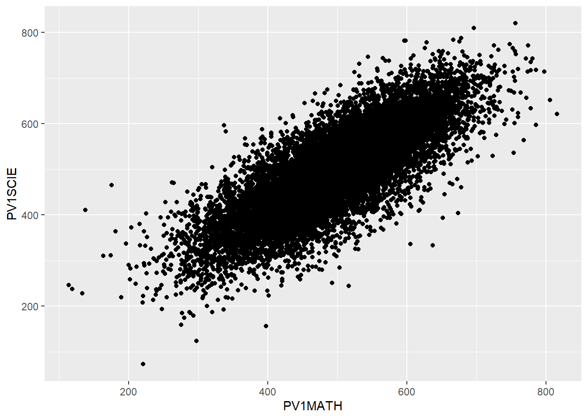
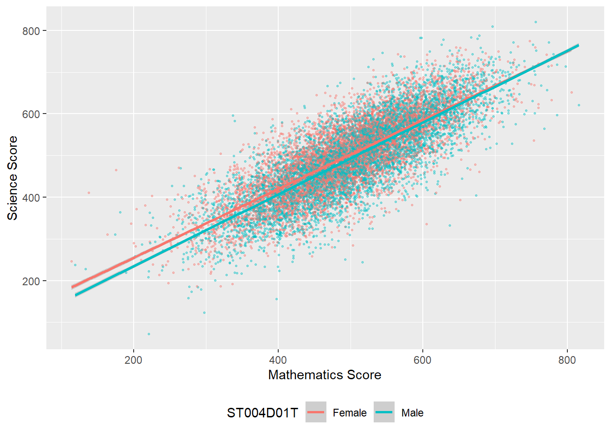

[1] 455.76703 Descriptive Statistics
1 Seminar activities
1.1 Discussion activity
Based on Davis (2013) Link to chapter

Consider how and why we think of things as being ‘normal’ (or not). Some suggested questions are:
- What were your immediate thoughts on reading this paper?
- In what ways have you yourself been aware of being compared to norms or ideals?
- How do you feel about that? As an education professional, have you made comparisons between individual students and expected norms or averages? Between groups of students?
- When and how was this useful?
- When and how was this problematic?
1.2 Tasks
Getting set up
Ensure you have the PISA 2018 data set loaded. If you can see the PISA_2018 data frame in your environment window (at the top right of your screen), there is no need to reload.
Tip
We are going to focus on the following variables in the PISA_2018 dataset:
CNT the country of the student.
ISCEDO refers to the type of school the student attends. It’s values can be: General, Pre-Vocational, Vocational, Modular, or NA
WEALTH is a self-reported measure of student’s wealth. It is a numeric variable, with a mean of -0.4, minimum of -7.5 and a maximum of 4.75.
ESCS is the index of economic, social and cultural status. It might be thought of a relating to a measure of economic and social status (with some cultural capital measures included). It is a numeric variable, with a mean of 0, minium of -8.2 and a maximum of 4.3.
PV1MATH, PV1SCIE, PV1READ are the plausible value scores for achievement tests in mathematics, science and reading, respectively. The full achievement tests are long, so each student only completes a subset of items (which still takes 2 hours). Statistical models are then used to calculate an overall score, based on the response to the subset, as if students had answered all the questions. Ten different approaches to calculating a representative scores, plausible values are used, leading to ten different plausible values. We will just use the first plausible value (PV1). This differs from the PISA recommendation for using the scores, but simplifies things for teaching. For more on plausible values see: What are plausible values?
ST004D01T is the gender variable and is either ‘Male’, ‘Female’ or NA.
1.2.1 Descriptive statistics
For further reading on descriptive statistics and see chapter 5 and of Navaro’s Learning Statistics with R.
The simplest way to find information about a dataframe is to use the console. You type commands to find out about a dataframe directly into the console. To preform an action on a particular column (also called a vector), we use the $ symbol. For example, to refer to country data (which is in the vector CNT) we would use PISA_2018$CNT
In the command line, if you want to find the mean of all the science scores you can type the following:
mean(PISA_2018$PV1SCIE)
Notice that you get this response: [1] NA. An NA in the dataframe can occur for a number of reasons but may indicate a response is missing or incomplete. To tell R to ignore such entries, we add na.rm = TRUE to a function:
mean(PISA_2018$PV1SCIE, na.rm = TRUE)
You can use the command line with a number of functions to find useful information about a dataframe:
R has a number of standard functions that might be useful for descriptive statistics: mean - finds the arithmetic mean median - finds the median value min - finds the minimum value max - finds the maximum value sd - finds the standard deviation range finds the range of values nrow finds the number of rows ncol finds the number of colums unique finds the unique values of a variable
Tip
Surprisingly, there is no function to calculate the mode in tidyverse. However, you can get one by loading the modeest package and using the most frequent value (nfv) function.
1.2.2 Task 1
- Using the command line find out:
- The number of students (i.e. the number of rows) in the PISA 2018 dataset
- The number of items in our dataset (i.e. the number of columns)
- The mean, maximum and minimum science score (don’t forget to use
$) - The unique values of
ST003D02T- what information do you think this column holds?
Tip
You can read a complete list of what the items in PISA mean here: PISA 2018 student survey item descriptors
A useful way to get a quick summary of what is in a data.frame is, the summary command. This command outputs the minimum, median, mean, maximum (and 1st and 3rd quartile, i.e. the values at 25% and 75% of the range). For example, to get a sense of the science score variable (PV1SCIE) we can use:
Min. 1st Qu. Median Mean 3rd Qu. Max. NA's
58.74 385.60 458.20 460.69 533.44 886.08 5377 1.2.3 Task 2
- Using
summaryfind:
- The maximum and minimum of the WEALTH variable
- The mean reading score
- The minimum science score in the data set
- Comment on the difference in distribution of the reading and science scores
We will now learn how to calculate means of subgroups of schools using the filter and summarise functions. We can use filter to focus on only a subset of our data.frame. For example, below, we choose to focus on responses from UK students.
In line 3 below, we focus on UK responses. Note that, in filter we use ==. Then we use summarise to calculate the means of the variables we are interested in, students getting science (PV1SCIE), mathematics (PV1MATH) and reading scores. We can also find the total number of students entered in the UK, using (n).
# A tibble: 1 × 3
MeanSci MeanMath Total
<dbl> <dbl> <int>
1 495. 497. 13818
Tip
If you want to filter by a different vector (that is, a different column in the table), don’t forget to change the name of the vector in the filter command, for example, to find the mean mathematics and reading scores, and total number of pupils in vocational schools. Don’t forget to use the %>% and the == in filter!
# A tibble: 1 × 3
MeanSci MeanMath Total
<dbl> <dbl> <int>
1 424. 428. 76506You can add multiple filters by using the & operator which means AND. Later on we will also meet |, which means OR. So if you want to find the scores of female students in the UK you would use:
# A tibble: 1 × 3
MeanSci MeanMath Total
<dbl> <dbl> <int>
1 494. 501. 6822Often we are interested in summary data across multiple subgroups. We can then tell R to group_by, for example, group_by(CNT), to get a summary of data for subgroups.
# A tibble: 80 × 4
CNT MeanSci MeanMath Total
<fct> <dbl> <dbl> <int>
1 Albania 417. 438. 6359
2 United Arab Emirates 425. 430. 19277
3 Argentina 418. 392. 11975
4 Australia 502. 492. 14273
5 Austria 493. 503. 6802
6 Belgium 502. 511. 8475
7 Bulgaria 426. 440. 5294
8 Bosnia and Herzegovina 398. 407. 6480
9 Belarus 474. 473. 5803
10 Brazil 407. 384. 10691
# ℹ 70 more rows
Tip
In the console, R will truncate tables, so you might only see the first 10 countries of 80 in the dataset using the code above. One solution to this is to put the results of the summarising into a new dataframe (e.g. summarydata) which you can then view from the environment window (and use for future processing). To do this you use the asign operator <-
1.2.4 Task 3
Find the total number of students who responded in the United States, their mean science, mathematics and reading scores. Compare that to the responses in China (Note the country name for China is: B-S-J-Z (China), indicating the data are drawn from the four participating municipalities, Beijing, Shanghai, Jiangsu and Zhejiang).Don’t forget to pipe (
%>%) each step!Filter the dataset for the UK and
group_bygender (which isST004D01T). Use summarise to find the maximum, minimum and mean scores for boys and girls in mathematics.Filter the dataset for the UK, the US and China, and
group_bygender (which isST004D01T) and country. Use summarise to compare mathematics and science achievement.
Tip
Make sure you have spelled the name of the variables PV1MATH, etc. correctly. They are case sensitive. You can use the function colnames(PISA_2018) to get a list of names and copy and paste them
1.2.5 Creating summary tables and manipulating them
The PISA data set is large (!) so it can often be helpful to create interim summary tables.
Tip
When using summarise, be careful to add a comma after each function, and check you have closed as many brackets as you open!
A useful function is table which creates a summary table of the counts of unique entries in a dataframe. For example, we might want to know how many schools of different types (General, Pre-Vocational, Vocational, Modular) there are in the PISA dataset for the UK.
We have met the filter function which subsets a table by rows. In the example below, we will use select which creates a subset of a table by columns. For example, if I want to create the table of school type by country, we need only include two columns from the PISA_2018 dataset, country (CNT) and schooltype (ISCEDO). We use the command select to focus on those two: select(CNT, ISCEDO).
To create a summary table, intuitively, we use the table function. There are two additional actions we need to do. First, because we piped the whole PISA_2018 dataset, if we apply table, even though we have filtered by the UK, the dataset retains levels for all the other countries. If we don’t remove these levels, we will get a large dataset with many zero entries for the countries we have filtered out. The function droplevels() removes the levels for other countries. Finally, the output of table is a datatype called (appropriately) a table. Dataframes are more easily maniuplated so we convert the table into a dataframe using as.data.frame(table(SchoolType))
You can open the SchoolTypeSummary dataframe and see the summary data. Table has created a new column Freq which stores the results of the counts.
It might now be intersting to now what percentage the counts of school types represent. To achieve that, first we create a variable that is the total number of schools (to calculate the percentage) -this variable is total and we perform a simple sum on the count column - SchoolTypeSummary$Freq.
We then use the mutate function. mutate allows you to add a new column to a table. You pipe the dataframe to mutate, and begin by giving the name of the new column you want, in this case the percentage of schools of each type, I will call this PerSch mutate(PerSch=. Then I set the value of that column to the percentage calculation: Freq*100/total). The Frequency count for each column will be multiplied by 100 and divided by the total.
CNT ISCEDO Freq PerSch
1 United Kingdom General 13762 99.59473151
2 United Kingdom Pre-Vocational 10 0.07236937
3 United Kingdom Vocational 46 0.33289912
Tip
You can use the round`` function to display a given number of decimal places. Here, I have usedround( ,2)` to limit the percentage calculation to two significant figures
CNT ISCEDO Freq PerSch
1 United Kingdom General 13762 99.59
2 United Kingdom Pre-Vocational 10 0.07
3 United Kingdom Vocational 46 0.331.2.6 Task 4
Tip
Don’t forget to use the pipe operator %>% between each function
ST205Q02HA asks participants if they feel students in their school are competing with each other. For students in the UK, find out the percentage of students who responded: Not at all true, Slightly true, Very true, Extremely true, and NA. (Hint: don’t forget to droplevels())
ST012Q09NA asks students if they have a musical instrument in their home. What percentage of students in the UK have no instruments in their home? What is the percentage in China?
Tip
Don’t forget to use the pipe operator %>% between each function
1.2.7 Graphing
For more details on graphing with the PISA_2018 dataset, see ?@sec-graphing
1.2.7.1 Column graphs
Imagine we want to plot a graph of whether students report having an interactive whiteboard (IWB) in their school IC009Q11NA in the UK
When plotting graphs, it makes things easier to have a data.frame of the data you will pass to ggplot - a bit like the final table of data you will actually plot when drawing a graph in real life.
To complete our take we are going to create a new data.frame we will use in the plot. I have called that data.frame IWBplot. Then, I take the main data.frame and select IC009Q11NA and CNT and filter for the UK.
The new element here is using ggplot, R’s graphing function (more details on how to use geom_bar are in the section above: Geom_bar).
To plot a graph, you call ggplot and specify the data you want to use for the graph (in our case, the new data.frame we have created, IWBplot).
The next layer of ggplot is the aesthetics (aes), i.e., what our graph will look like. First, we tell ggplot what we want our y (IC009Q11NA). Finally, we specify we want a bar graph using geom_bar().

1.2.8 Task 5
- Plot a bar graph of
ST221Q03HA- I learn about other cultures at school? First for the UK, then for France.
- Plot a bar graph of
ST013Q01TA- How many books are there in your home? for students in the UK. Then plot a graph splitting the data by gender (ST004D01T)
- Plot a bar graph of the mean mathematics scores of the countries in the PISA dataset (Hint, you will need to use
group_byandsummariseandgeom_bar(stat="identity")is used when you want geom_bar to plot the actually values (because you have already summarised) rather than counting the values. Second hint: you can reorder the x-axis with thereorderfunction. Rather than a simplex=CNTyou can putx=reorder(CNT, -SciMean)which will reorder the x axis in descending order (because of the-sign) ofSciMean.
1.2.9 Scatter Graphs
To plot a scatter graph we use the geom_point (see also: Geom_Point section), which works in a similar way to geom_col.
Example
Imagine I want to plot a graph of mathematics scores PV1MATH (on the x-axis) against science scores PV1SCIE (y-axis) for students in the UK.
A above, I first want to create a data.frame to plot - in this case I have called it plotdata. I select only the columns I need (PV1MATH, PV1SCIE, and CNT to filter for the UK), and then filter for the UK.
Then I pass ggplot plotdata. As with geom_col, I use ggplot and first specify the data I want to plot (ggplot(data=plotdata,). Next, I set the aesthetic variables, to keep things simple,only the x and y variables. Then I call geom_point to plot the points as a scatter graph.

We can make things more pleasing by adding more features to the aesthetic variable. For example, I can add colour (geom_point(colour="blue")) and rename the axes labs(x="Mathematics score", y="Science score"). Note when adding to ggplot, the + should come at the end of the line before the new addition to avoid an error.

I can also add a line using (geom_smooth(method='lm')) - here ‘lm’ specifies a linear plot (i.e. a straight line).

I can also change the colour of the points by a variable in the dataframe - for example by gender (aes(colour=ST004D01T) - NB I have to select that collumn in my intial selection. I can vary the size of points and make them slightly transparent (their alpha level): geom_point(alpha=0.4, size=0.6), and I can move the legend to the bottom (theme(legend.position = "bottom"))

Tip
For a summary of all the elements of a graph you can change in ggplot - see this help sheet
1.2.10 Task 6
- For students in the UK and Brazil, plot science scores (
PV1SCIE) by the index of economic, social and cultural status (ESCS) - a little like social class. The try varying the colour of points by country, adding a line.
- For students in the UK, plot a graph of science scores (
PV1SCIE) against reading scores (PV1READ). Add a straight line and vary the colour of points by students’ gender
- Challenging task (!): Plot a graph of mean Maths score (
PV1MATH) by economic, social and cultural status (ESCS) and highlight countries with maths scores above 800. An outline of how to acheive this:
- create a dataframe of mean
PV1MATHandESCSby country usinggroup_byandsummarise. (Don’t forget to use na.RM=TRUE) - use
mutateandifelseto add a new variable, calledtextwhich contains the names of countires with mathematics scores over 500. - use
geom_labelto add these data points to the x and y coordinates of the countries e.g.geom_label(PV1MATHmean, ESCSmean, label)

1.2.11 Extension task - Binning data
If we want to plot a frequency plot, the kind of chart that often gives a normal distribution, we need to divide data into counts of ranges of data.
For example, to produce a frequency plot of science scores in the UK, I can first run a summary command on PV1SCIE to find the minimum and maximum score:
Min. 1st Qu. Median Mean 3rd Qu. Max. NA's
58.74 385.60 458.20 460.69 533.44 886.08 5377 If we wanted to plot a frequency chart of heights, we might divide the range of scores (from 58.74-886.08) into bins of 20 points. To do this we can use the cut(<field>,<breaks>) function within the mutate command on a ‘data.frame’. The <field> specifies the range (i.e. from around 50-900) and <breaks> the size of bins.
In the example below, I use cut(PV1SCIE, breaks=seq(50,900,20)) to create a new vector (column in the table) with the total number of pupils divided up into bins. The specification breaks=seq(50,900,20)) sets how the data are broken up - into bins (i.e. groups of respondents) of scores starting at 50 and rising to 900 in steps of 20.

Create a graph of the binned counts of mathematics scores in Malta. Don’t forget to run a summary command first to get a sense of the range in values.
Tip
To find out a range of a vector, you can use the range function in the console - for example, to get a sense of the range of numbers of students on SEN support. I can type: range(DfE_SEN_data$SEN.support)
Tip
To find out a range of a vector, you can use the range function in the console - for example, to get a sense of the range of numbers of students on SEN support. I can type: range(DfE_SEN_data$SEN.support)
Plot a binned geom_bar graph of the wealth scores in the UK and Belarus on the same axes.
1.3 Useful resources
- The ’From Data to Viz’ blog has a helpful flowchart for choosing an appropriate type of graph for different forms of data.
- The Royal Statistical Society has produced a useful guide to making visual representations, Best Practice for Data Representations, that shows you how to make readable, accessible data visualisations.
References
Davis, Lennard J. 2013. “Introduction: Normality, Power, and Culture.” The Disability Studies Reader 4: 1–14. https://ieas-szeged.hu/downtherabbithole/wp-content/uploads/2018/02/Lennard-J.-Davis-ed.-The-Disability-Studies-Reader-Routledge-2014.pdf#page=15.